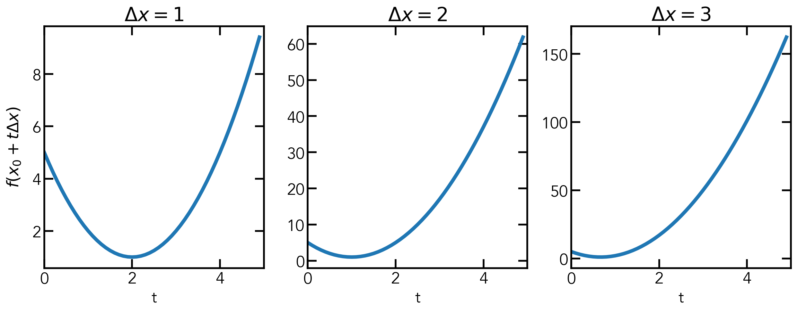
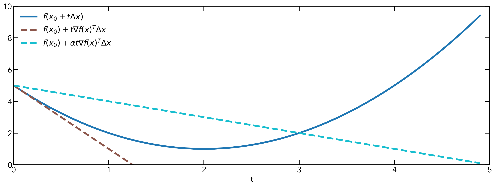

Gradient Descent & Line Search
By Bolun Dai | Jan 21st, 2021
Gradient descent is a method for unconstrained, smooth convex optimization problems, such as $$\min_{x}\ \ f(x).$$ Following the definition of a convex optimiztion problem: the objective has to be a convex function over a convex domain. Along with the smooth assumption, we can say that \(f(x)\) is a convex and differentiable function over \(\mathrm{dom}(f) = \mathbb{R}^n\). Starting from an initial state \(x^{(0)}\in\mathbb{R}^n\), at each step the gradient descent algorithm performs an update $$x^{(k)} = x^{(k-1)} - t_k\nabla f(x^{(k-1)}),\ k=1, 2, 3, \cdots,$$ here \(t_k\) is the \(k\)-th step size, \(\nabla f(x^{(k-1)})\) is the gradient of \(f(x)\) evaluated at \(x^{(k-1)}\) and \(x^{(k)}\) is the estimation of the solution after the \(k\)-th update. We perform the update iteratively until it converges to a solution \(x^*\), which approximately minimizes \(f(x)\).
For those coming from a machine learning background we know the term gradient descent from stochastic gradient descent (SGD), and the intuition behind SGD is simply going in the direction of the negative gradient. This is correct. However, this is a processed version, the original intuition behind gradient descent is different.
In the original flavor, we are approximating the function \(f(x)\) at \(x^{(k)}\) using a quadratic function, then we can find \(\tilde{x}\) such that it gives the minimal value to the quadratic function. Afterwards, we simply update the current estimation of the solution to be \(\tilde{x}\). Now the next problem becomes which quadratic approximation should we use? If we write the second-order Taylor's expansion of \(f(x)\) at \(x^{(k-1)}\) we have $$f(y)\approx f(x^{(k-1)}) + \nabla f^T(x^{(k-1)})(y - x^{(k-1)}) + \frac{1}{2}(y - x^{(k-1)})^T\nabla^2f^T(x^{(k-1)})(y - x^{(k-1)}).$$ Then by estimating the Hessian \(\nabla^2f^T(x^{(k-1)})\) with \(\frac{1}{t_k}I\) we have $$f(y)\approx f(x^{(k-1)}) + \nabla f^T(x^{(k-1)})(y - x^{(k-1)}) + \frac{1}{2t_k}\|y - x^{(k-1)}\|_2^2.$$ We can set \(x^{(k)}\) to be where the minimum value of the approximated quadratic function is. To do this, we take the derivative of the approximated quadratic function $$\frac{\partial f(y)}{\partial y} = \nabla{f(x^{(k)})} + \frac{1}{t_k}(y - x^{(k)}).$$ By setting it to 0 we have \(y^* = x^{(k)} = x^{(k-1)} - t_k\nabla f(x^{(k-1)})\). Although the result is that same as going in the negative gradient direction, the thought process is not the same. The next problem that we face is how to define the step size \(t_k\). One thing to note is that with different step sizes the approximated quadratic function will also be different.
Line search is a method to get the step size \(t_k\) in gradient descent. A nice step size would make the next update \(x^+\) satisfy \(f(x^+)\) being less than \(f(x)\). Before we go into the details of line search, I want to show how we can change the units \(\Delta{x}\) when describing a function. When we describe a function \(f(x)\) it is a function of \(x\), we can do a change of variables and write it as \(f(x_0 + t\Delta{x})\) which is a function of \(t\). By default, the unit \(\Delta{x}\) we use in the coordinate system is 1. When we say \(x + t\) we are actually saying \(x + t\cdot\Delta{x}\), where \(\Delta{x}=1\). We can also set \(\Delta{x}\) to be other values. For example, let \(f(x) = (x-2)^2+1\), which we can rewrite as \(f(x_0 + t\Delta{x}) = (t\Delta{x}-2)^2 + 1\) if \(x_0 = 0\). And for different \(\Delta{x}\) values we can have the following plots:
We can change the unit to be anything we want, such as \(-\nabla{f(x_0)}\) which is exactly what it is for backtracing line search. The reason we use \(-\nabla{f(x_0)}\) is that if we write the next value \(x^{(k)}\) as \(x^{(k-1)} + t\Delta{x}\), since we know the update rule is \(x^{(k)} = x^{(k-1)} - t_k\nabla f(x^{(k-1)})\), we can match the terms and get \(\Delta{x} = -\nabla{f(x^{(k)})}\).
Now let's define what is an acceptable step size, we do not want to make the step size to small which leads to little progress, also we do not want to make the step size to large which might lead to overshooting. Also we would like the updated value \(x^{(k)}\) to give a smaller value of the objective function than \(x^{(k-1)}\).
We can first write the function \(f(x)\) in the form of \(f(x_0 + t\Delta{x})\), and its tangent line at \(x_0\) can be described by \(f(x_0) + t\nabla_t{f(x_0)}^T\Delta{x}\). If we add a parameter \(\alpha\in(0, 0.5]\) and have the line \(f(x_0) + \alpha t\nabla_t{f(x_0)}^T\Delta{x}\), we can see that if we set a step size that makes the update appear on the opposite side of the solution and smaller than \(f(x_0) + \alpha t\nabla_t{f(x_0)}^T\Delta{x}\) it will generate a nice step size $$f(x_0 + t\Delta{x}) \leq f(x_0) + \alpha t\nabla_t{f(x_0)}^T\Delta{x}.$$ To achieve this we can utilize another parameter \(\beta\in(0, 1)\) and set \(t_\mathrm{init}\) to some value, and iteratively decrease \(t\) by setting it to \(\beta t\) as long as the above criterion is not satisfied. Since we have \(\Delta{x} = -\nabla{f(x^{(k)})}\), we can write the above inequality as $$f(x_0 + t\Delta{x}) \leq f(x_0) - \alpha t\|\nabla_t{f(x_0)}\|_2^2.$$
For exact line search we find the step size that gives the minimum value of the objective function along the gradient direction. However, this is not always plausible given that it may take many iterations to be within a tolerable range. Which makes exact line search actually slower than backtracking. One question that I had before was: since exact line search gives the minimum value why does it take more than one step to reach the solution. The answer to this question is: exact line search only gives the minimum value along the gradient direction at the current point, the solution might not be on that line.
That is all I want to say about gradient descent and line search. I will try to update the blog to make my explanation more understandable.
Credit to Ryan Tibshirani, powered by